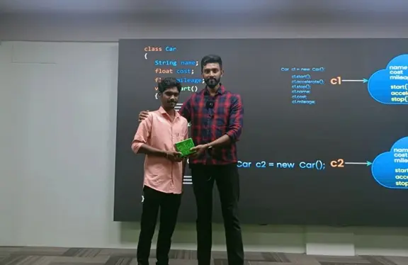

our complate online training has made students learn to code anytime anywhere & got placed in various Companies. Here are our few students placed at various companies
A warm thanks to the Tap Academy team. I am Gowtham GM from Tamilnadu, a 2024 passed-out student. I joined Tap Academy as a CSR student in the month of February. My journey with Tap Academy is quite different. The trainers at Tap Academy are skilled and experienced. They teach a lot of new concepts and help in learning programming languages from scratch. I am from the Computer Science branch, but the teaching at Tap Academy is structured in a way that makes it easy for students from all domains to understand the concepts and technology taught by the trainers. Finally, I got placed as a Software Engineer at Revature with a package of 3.25 LPA. The placement team helped me a lot in securing this job. Thank you to the entire Tap Academy team for helping me acquire this opportunity.
A warm thanks to the Tap Academy team. I am Gowtham GM from Tamilnadu, a 2024 passed-out student. I joined Tap Academy as a CSR student in the month of February. My journey with Tap Academy is quite different. The trainers at Tap Academy are skilled and experienced. They teach a lot of new concepts and help in learning programming languages from scratch. I am from the Computer Science branch, but the teaching at Tap Academy is structured in a way that makes it easy for students from all domains to understand the concepts and technology taught by the trainers. Finally, I got placed as a Software Engineer at Revature with a package 3.25 LPA. The placement team helped me a lot in securing this job. 